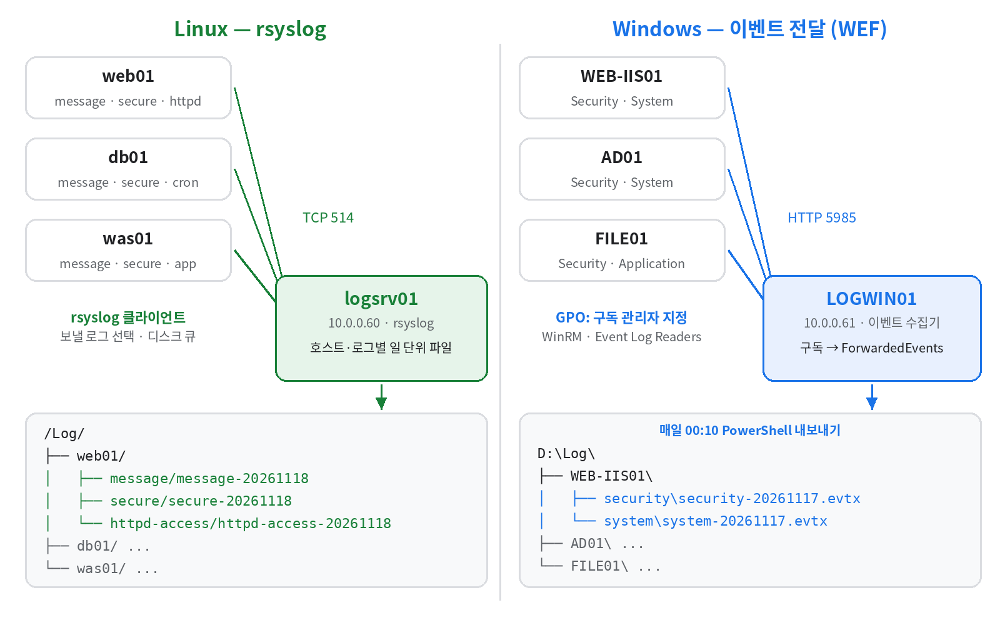
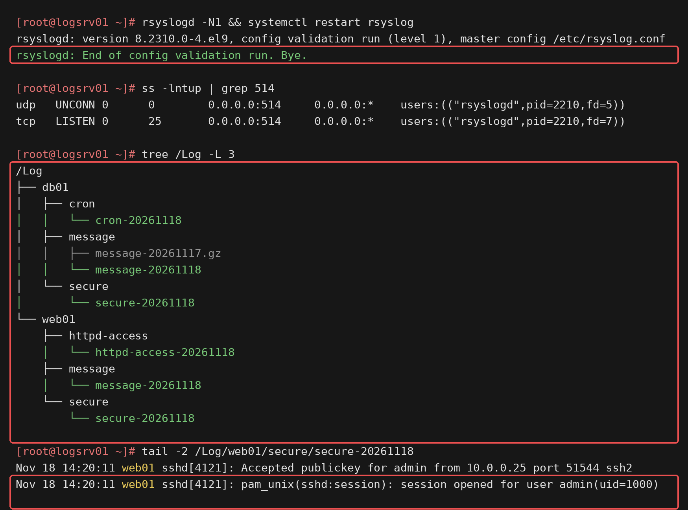
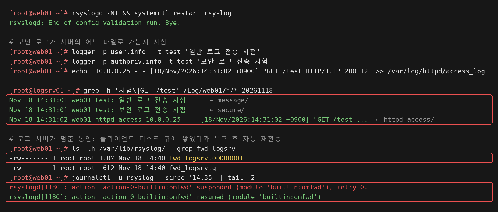
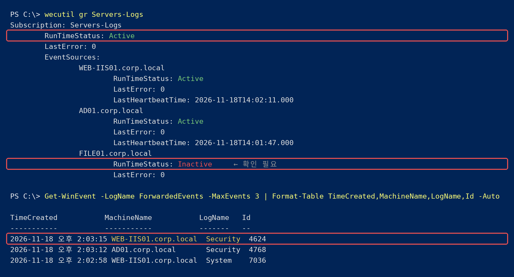
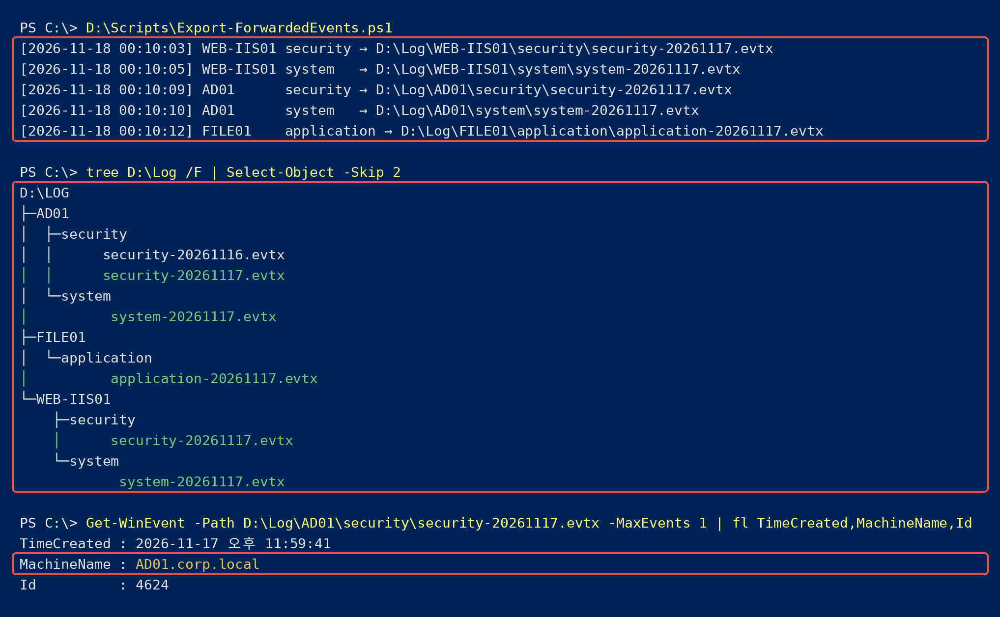
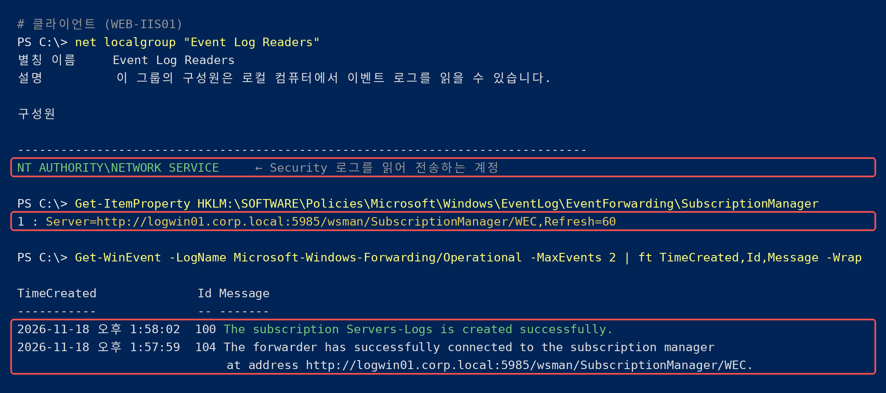

프로젝트 · 로그 모니터링·알림
중앙 로그 서버 구축 — Linux rsyslog · Windows 이벤트 전달
서버마다 흩어진 로그를 한곳에 모았습니다. 별도 제품 없이 OS에 들어 있는 기능만 사용했습니다. Linux는 rsyslog, Windows는 이벤트 전달(WEF)과 이벤트 수집기입니다. 어느 서버의 어떤 로그인지 바로 알 수 있게 호스트명 / 로그 종류 / 날짜 순서의 폴더와 파일로 저장합니다.
호스트명·IP·도메인(corp.local)은 예시이며 화면도 예시입니다.
1. 구성

| Linux | Windows | |
|---|---|---|
| 수집 서버 | logsrv01 10.0.0.60 (Rocky 9, rsyslog) | LOGWIN01 10.0.0.61 (Windows Server, 이벤트 수집기) |
| 전송 방식 | syslog TCP 514 (클라이언트가 보냄) | WinRM HTTP 5985 (클라이언트가 구독 서버에 붙어 보냄) |
| 보낼 로그 선택 | 클라이언트 설정 파일에서 선택 | 수집기의 구독(Subscription)에서 선택, 서버 그룹별로 구독 분리 |
| 저장 위치 | /Log/호스트명/message/message-YYYYMMDD | D:\Log\호스트명\security\security-YYYYMMDD.evtx |
| 호스트명 기준 | 로그 안의 호스트명 (짧은 이름, 소문자) | 이벤트의 Computer 값 (짧은 이름, 대문자) |
2. Linux 로그 서버 (rsyslog)
받은 로그마다 호스트명과 로그 종류를 변수로 정하고, 그 변수로 파일 경로를 만드는 템플릿(dynaFile)을 씁니다. 날짜가 바뀌면 경로가 바뀌므로 파일이 날짜별로 자동으로 나뉩니다.
# /etc/rsyslog.d/10-logserver.conf (logsrv01)
module(load="imudp")
module(load="imtcp")
# /Log/호스트명/로그종류/로그종류-YYYYMMDD
template(name="PerHostFile" type="string"
string="/Log/%$.host%/%$.logname%/%$.logname%-%$year%%$month%%$day%")
ruleset(name="remote") {
# 호스트명: 첫 마디만(web01.corp.local → web01), 소문자, 경로에 못 쓰는 문자 제거
set $.host = tolower(re_extract($hostname, "^[A-Za-z0-9_-]+", 0, 0, "unknown"));
# 로그 종류 → 폴더 이름 (Linux 기본 로그 파일 구분과 같게)
if ($syslogfacility-text == "authpriv" or $syslogfacility-text == "auth") then {
set $.logname = "secure";
} else if $syslogfacility-text == "cron" then {
set $.logname = "cron";
} else if $syslogfacility-text == "mail" then {
set $.logname = "maillog";
} else if $syslogfacility-text == "local6" then {
# 클라이언트가 파일 로그를 보낼 때 붙인 태그 이름을 그대로 폴더명으로
set $.logname = re_extract($programname, "^[A-Za-z0-9_-]+", 0, 0, "app");
} else {
set $.logname = "message";
}
action(type="omfile" dynaFile="PerHostFile" dynaFileCacheSize="200"
createDirs="on" dirCreateMode="0750" fileCreateMode="0640")
stop # 원격 로그가 로그 서버 자신의 /var/log/messages 에 섞이지 않게
}
# 수신 포트 — 이 입력으로 들어온 로그만 위 ruleset 으로 처리
input(type="imtcp" port="514" ruleset="remote")
input(type="imudp" port="514" ruleset="remote")# 저장 폴더 + SELinux 라벨 (기본 경로가 아니라서 지정 필요)
mkdir -p /Log && chmod 750 /Log
semanage fcontext -a -t var_log_t "/Log(/.*)?"
restorecon -Rv /Log
# 방화벽: 서버 대역에서만 514 허용
firewall-cmd --permanent --add-rich-rule='rule family=ipv4 source address=10.0.0.0/24 port port=514 protocol=tcp accept'
firewall-cmd --permanent --add-rich-rule='rule family=ipv4 source address=10.0.0.0/24 port port=514 protocol=udp accept'
firewall-cmd --reload
# 문법 확인 → 재시작
rsyslogd -N1 && systemctl restart rsyslog
| 설정 | 의미 |
|---|---|
$hostname | 클라이언트가 로그에 적어 보낸 호스트명. 클라이언트에서 hostnamectl set-hostname web01로 정확히 설정해 둠 |
re_extract(..., "^[A-Za-z0-9_-]+") | 호스트명·태그에 /, .. 같은 문자가 들어와도 다른 경로에 파일을 만들지 못하게 허용 문자만 남김 |
%$year%%$month%%$day% | 로그 서버가 받은 날짜. 자정이 지나면 새 파일로 바뀜 |
dynaFileCacheSize | 동시에 열어 둘 파일 수. 호스트 × 로그 종류보다 크게 (기본 10은 서버가 많으면 부족) |
ruleset + stop | 원격 로그와 로그 서버 자신의 로그를 분리 |
$hostname 대신 $fromhost-ip를 씁니다. 호스트명은 클라이언트가 적어 보내는 값이라 위조할 수 있고, IP는 실제 접속한 주소입니다. 대신 폴더 이름이 IP가 되어 알아보기 어렵습니다.보관·압축
# /etc/cron.daily/log-archive (chmod 700)
#!/bin/bash
TODAY=$(date +%Y%m%d)
# 오늘 파일을 뺀 나머지를 압축
find /Log -type f ! -name "*-$TODAY" ! -name '*.gz' -exec gzip -9 {} +
# 1년 지난 압축 파일 삭제
find /Log -type f -name '*.gz' -mtime +365 -delete3. Linux 클라이언트 — 보낼 로그 선택
클라이언트는 설정 파일 하나에서 ① 보낼 곳, ② 보낼 시스템 로그, ③ 보낼 파일 로그를 정합니다. 필요 없는 줄은 #로 막으면 됩니다.
# /etc/rsyslog.d/90-forward.conf (web01 등 각 클라이언트)
module(load="imfile")
# ① 보낼 곳 — 로그 서버가 멈추면 디스크 큐에 보관했다가 살아나면 자동 재전송
ruleset(name="to_logsrv") {
action(type="omfwd" target="10.0.0.60" port="514" protocol="tcp"
queue.type="LinkedList" queue.filename="fwd_logsrv"
queue.maxDiskSpace="1g" queue.saveOnShutdown="on"
action.resumeRetryCount="-1" action.resumeInterval="30")
}
# ② 보낼 시스템 로그 (오른쪽 주석 = 서버에 저장되는 폴더)
if prifilt("*.info;mail.none;authpriv.none;cron.none;local6.none") then call to_logsrv # message
if prifilt("authpriv.*") then call to_logsrv # secure
if prifilt("cron.*") then call to_logsrv # cron
#if prifilt("mail.*") then call to_logsrv # maillog
# ③ 보낼 파일 로그 — Tag 가 서버의 폴더 이름이 됨
input(type="imfile" File="/var/log/httpd/access_log" Tag="httpd-access" Facility="local6" Severity="info")
input(type="imfile" File="/var/log/httpd/error_log" Tag="httpd-error" Facility="local6" Severity="error")
#input(type="imfile" File="/app/logs/app.log" Tag="app" Facility="local6" Severity="info")
if $syslogfacility-text == "local6" then {
call to_logsrv
stop # 파일 로그가 로컬 /var/log/messages 에 또 기록되지 않게
}hostnamectl set-hostname web01 # 서버 폴더 이름이 될 호스트명
rsyslogd -N1 && systemctl restart rsyslog
logger -p authpriv.info -t test '보안 로그 전송 시험' # → 서버 /Log/web01/secure/호스트명 직접 지정 (선택)
서버 폴더 이름은 클라이언트가 로그에 적어 보내는 호스트명으로 정해집니다. OS 호스트명이 localhost처럼 의미가 없거나 바꾸기 어려울 때, 또는 폴더를 업무 이름으로 나누고 싶을 때는 90-forward.conf 안에서 직접 지정합니다.
방법 1: global(localHostname=...) — 간단
# /etc/rsyslog.d/90-forward.conf 맨 위
global(localHostname="web01")- rsyslog가 로그에 적는 호스트명을 OS 호스트명 대신 이 값으로 바꿉니다.
- 서버로 보내는 로그뿐 아니라 클라이언트 자신의
/var/log/messages등에 찍히는 호스트명도 함께 바뀝니다. global()은 여러 파일에 나눠 써도 되지만 같은 항목을 두 번 지정하면 오류가 납니다.rsyslog.conf에 이미localHostname이 있는지 확인합니다.
방법 2: 전송용 템플릿에만 고정 — 로컬 로그는 그대로
# 보내는 로그에만 호스트명을 web01 로 고정 (rsyslog 기본 전송 형식에서 %HOSTNAME% 자리만 바꿈)
template(name="FwdFixedHost" type="string"
string="<%PRI%>%TIMESTAMP:::date-rfc3339% web01 %syslogtag:1:32%%msg:::sp-if-no-1st-sp%%msg%")
ruleset(name="to_logsrv") {
action(type="omfwd" target="10.0.0.60" port="514" protocol="tcp"
template="FwdFixedHost"
queue.type="LinkedList" queue.filename="fwd_logsrv"
queue.maxDiskSpace="1g" queue.saveOnShutdown="on"
action.resumeRetryCount="-1" action.resumeInterval="30")
}| 상황 | 추천 |
|---|---|
| OS 호스트명이 이미 정확함 | 설정 불필요 (hostnamectl 값 사용) |
OS 호스트명이 localhost 등이고 바꾸기 어려움 | 방법 1 또는 2 |
OS 호스트명은 두고 서버 폴더만 업무 이름(예: erp-web)으로 | 방법 2 |
web01 자리에 서버마다 다른 이름이 들어가게 합니다.
| 설정 | 의미 |
|---|---|
protocol="tcp" | UDP는 서버가 받지 못해도 모름. TCP는 연결이 끊기면 알고 큐에 보관 |
queue.filename, maxDiskSpace | 메모리 큐가 넘치거나 서비스를 재시작할 때 /var/lib/rsyslog/에 저장, 최대 1GB |
action.resumeRetryCount="-1" | 서버가 살아날 때까지 무한 재시도 (기본값이면 몇 번 실패 후 버림) |
prifilt("시설.등급") | 기존 /etc/rsyslog.conf와 같은 선택 문법. *.info;mail.none = info 이상 전부, mail 제외 |
imfile Tag | syslog로 기록되지 않는 파일(웹·앱 로그)을 한 줄씩 읽어 이 이름으로 전송. 서버는 local6 + 태그 이름으로 폴더를 만듦 |
- 파일 로그를 읽으려면 rsyslog가 그 파일에 접근할 수 있어야 합니다. SELinux가 막으면
ausearch -m avc -ts recent로 확인하고 파일 라벨을 조정합니다. - prifilt 줄끼리 겹치면 같은 로그가 두 번 갑니다. 위 예처럼
.none으로 서로 겹치지 않게 나눕니다.
4. Windows 로그 수집 서버 (이벤트 수집기)
Windows에는 syslog가 없고, 대신 이벤트 전달(Windows Event Forwarding)이 기본으로 들어 있습니다. 수집 서버에 구독(Subscription)을 만들어 어떤 로그를 받을지 정하면, 클라이언트들이 구독을 가져가 해당 이벤트를 보내 줍니다. 받은 이벤트는 수집 서버의 ForwardedEvents 로그 하나에 모입니다. 아래는 AD 도메인 환경 기준입니다.
# LOGWIN01 (관리자 PowerShell)
winrm quickconfig -q # WinRM 수신 (Server 기본 사용 중이면 생략)
wecutil qc /q # Windows 이벤트 수집기 서비스 구성·자동 시작
wevtutil sl ForwardedEvents /ms:4294967296 # ForwardedEvents 최대 4GB (기본 20MB)구독 — 어떤 서버에서 어떤 로그를 받을지
<!-- D:\Scripts\Servers-Logs.xml -->
<Subscription xmlns="http://schemas.microsoft.com/2006/03/windows/events/subscription">
<SubscriptionId>Servers-Logs</SubscriptionId>
<SubscriptionType>SourceInitiated</SubscriptionType> <!-- 클라이언트가 먼저 접속 -->
<Description>서버 Security·System·Application 수집</Description>
<Enabled>true</Enabled>
<Uri>http://schemas.microsoft.com/wbem/wsman/1/windows/EventLog</Uri>
<ConfigurationMode>Custom</ConfigurationMode>
<Delivery Mode="Push">
<Batching><MaxItems>50</MaxItems><MaxLatencyTime>30000</MaxLatencyTime></Batching>
<PushSettings><Heartbeat Interval="900000"/></PushSettings>
</Delivery>
<Query><![CDATA[
<QueryList>
<Query Id="0">
<Select Path="Security">*</Select>
<Select Path="System">*[System[(Level=1 or Level=2 or Level=3)]]</Select>
<Select Path="Application">*[System[(Level=1 or Level=2)]]</Select>
</Query>
</QueryList>]]></Query>
<ReadExistingEvents>false</ReadExistingEvents>
<TransportName>HTTP</TransportName>
<ContentFormat>RenderedText</ContentFormat>
<Locale Language="ko-KR"/>
<LogFile>ForwardedEvents</LogFile>
<!-- 보낼 수 있는 컴퓨터: Domain Computers 전체 (특정 그룹만이면 그 그룹 SID) -->
<AllowedSourceDomainComputers>O:NSG:BAD:P(A;;GA;;;DC)S:</AllowedSourceDomainComputers>
</Subscription>wecutil cs D:\Scripts\Servers-Logs.xml # 구독 생성 (수정 후에는 wecutil ds 로 지우고 다시 생성)
wecutil gs Servers-Logs # 설정 확인
wecutil gr Servers-Logs # 접속한 클라이언트와 상태| 구독 항목 | 의미 |
|---|---|
Select Path | 보낼 로그 선택. 로그 이름과 조건(XPath). 위 예는 Security 전부, System은 경고 이상, Application은 오류 이상 |
AllowedSourceDomainComputers | 보낼 서버 선택. DC는 Domain Computers. 서버 그룹별로 다른 로그를 받으려면 AD 그룹을 만들고 그 SID를 넣은 구독을 따로 만듦 |
MaxLatencyTime | 최대 30초 모아서 전송 (실시간에 가깝게, 부하는 조금 더) |
ContentFormat RenderedText | 이벤트 설명 문장까지 함께 전송 → 다른 PC에서 파일을 열어도 내용이 보임 |
ReadExistingEvents false | 구독 이후 새 이벤트만 (true면 기존 로그 전체를 한 번에 보냄) |
# 예) 웹서버 그룹은 IIS 관련 로그까지 따로 받기
(Get-ADGroup "WEF-Web-Servers").SID.Value # S-1-5-21-...-1123
# 구독 XML 의 AllowedSourceDomainComputers → O:NSG:BAD:P(A;;GA;;;S-1-5-21-...-1123)S:
# Select 에 추가 → <Select Path="Microsoft-IIS-Configuration/Operational">*</Select>
5. Windows — 호스트·로그별 일자 파일로 내보내기
ForwardedEvents는 모든 서버의 이벤트가 한 로그에 섞여 있고, 용량이 차면 오래된 것부터 덮어씁니다. 그래서 매일 0시 10분에 전날 이벤트를 호스트·로그별로 나눠 .evtx 파일로 저장합니다. 전달된 이벤트에도 원래 컴퓨터 이름(Computer)과 원래 로그 이름(Channel)이 남아 있어서, 이 두 값으로 나눕니다.
# D:\Scripts\Export-ForwardedEvents.ps1 — 전날 수집된 이벤트를 D:\Log\호스트\로그\로그-YYYYMMDD.evtx 로
param([datetime]$Day = (Get-Date).Date.AddDays(-1))
$Root = 'D:\Log'
$From = $Day.ToUniversalTime().ToString('yyyy-MM-ddTHH:mm:ss.fffZ') # 이벤트 시각은 UTC 로 비교
$To = $Day.AddDays(1).ToUniversalTime().ToString('yyyy-MM-ddTHH:mm:ss.fffZ')
$Stamp = $Day.ToString('yyyyMMdd')
# 그날 들어온 (호스트, 로그) 조합
$pairs = Get-WinEvent -FilterHashtable @{ LogName = 'ForwardedEvents'; StartTime = $Day; EndTime = $Day.AddDays(1) } `
-ErrorAction SilentlyContinue |
Select-Object MachineName, LogName -Unique
foreach ($p in $pairs) {
$hostName = ($p.MachineName -split '\.')[0].ToUpper() # WEB-IIS01.corp.local → WEB-IIS01
$logName = $p.LogName.ToLower() # Security → security
$dir = Join-Path $Root "$hostName\$logName"
New-Item -ItemType Directory -Path $dir -Force | Out-Null
$file = Join-Path $dir "$logName-$Stamp.evtx"
# 호스트 + 원래 로그 + 시간 범위로 골라 그대로 .evtx 저장
$query = "*[System[(Computer='$($p.MachineName)') and (Channel='$($p.LogName)') " +
"and TimeCreated[@SystemTime>='$From' and @SystemTime<'$To']]]"
wevtutil epl ForwardedEvents $file "/q:$query" /ow:true
"[{0:yyyy-MM-dd HH:mm:ss}] {1,-9} {2,-8} → {3}" -f (Get-Date), $hostName, $logName, $file
}
# 1년 지난 파일 삭제
Get-ChildItem $Root -Recurse -Filter *.evtx |
Where-Object LastWriteTime -lt (Get-Date).AddDays(-365) | Remove-Item# 매일 00:10 SYSTEM 계정으로 실행
$act = New-ScheduledTaskAction -Execute 'powershell.exe' `
-Argument '-NoProfile -ExecutionPolicy Bypass -File D:\Scripts\Export-ForwardedEvents.ps1'
$trg = New-ScheduledTaskTrigger -Daily -At 00:10
Register-ScheduledTask -TaskName 'Export-ForwardedEvents' -Action $act -Trigger $trg -User 'SYSTEM' -RunLevel Highest
# 특정 날짜를 다시 내보낼 때
D:\Scripts\Export-ForwardedEvents.ps1 -Day '2026-11-15'
- .evtx로 저장한 이유: 원본 이벤트 형식 그대로라 이벤트 뷰어에서 필터·검색이 되고, 침해사고 분석 도구들도 바로 읽습니다. 텍스트가 필요하면
Get-WinEvent -Path 파일 | Export-Csv로 바꿉니다. - 하루 이벤트가 매우 많으면 (호스트, 로그) 조합을 찾는
Get-WinEvent가 느려집니다. 그때는 구독의 클라이언트 목록(wecutil gr)과 로그 이름 목록을 고정해 반복합니다. D:\Log는 Administrators만 읽을 수 있게 권한을 제한합니다.
6. Windows 클라이언트 구성
Windows는 어떤 로그를 보낼지를 수집 서버의 구독에서 정하고, 클라이언트는 어느 수집 서버로 보낼지만 정합니다. 그래서 로그 종류를 바꿀 때 클라이언트를 하나씩 고칠 필요가 없습니다. 클라이언트 설정은 GPO로 한 번에 배포합니다.
GPO (서버 OU에 연결)
컴퓨터 구성 → 정책 → 관리 템플릿 → Windows 구성 요소 → 이벤트 전달
└ 대상 구독 관리자 구성 : 사용
Server=http://logwin01.corp.local:5985/wsman/SubscriptionManager/WEC,Refresh=60
컴퓨터 구성 → 정책 → Windows 설정 → 보안 설정 → 제한된 그룹 (또는 기본 설정 → 로컬 사용자 및 그룹)
└ Event Log Readers 에 NT AUTHORITY\NETWORK SERVICE 추가
(전달 서비스가 NETWORK SERVICE 로 동작 → Security 로그를 읽으려면 필요)
컴퓨터 구성 → 정책 → 관리 템플릿 → Windows 구성 요소 → Windows 원격 관리 → WinRM 서비스
└ 원격 서버 관리 허용(WinRM 수신) : 사용 ※ 클라이언트가 수집 서버로 먼저 접속하므로
수집 서버 방화벽에서 클라이언트 → 5985 인바운드만 허용하면 됨# 클라이언트에서 GPO 없이 시험할 때 (관리자 PowerShell)
net localgroup "Event Log Readers" "NT AUTHORITY\NETWORK SERVICE" /add
winrm quickconfig -q
gpupdate /force
Restart-Service WinRM
# 확인
Get-WinEvent -LogName Microsoft-Windows-Forwarding/Operational -MaxEvents 5
7. 트러블슈팅
| 증상 | 원인 및 해결 |
|---|---|
| Linux: 서버에 폴더가 안 생김 | 방화벽 514, SELinux 라벨(/Log에 var_log_t), rsyslogd -N1 문법 오류 확인. 클라이언트에서 logger로 시험 |
Linux: 폴더 이름이 localhost·IP | 클라이언트 호스트명 미설정 → hostnamectl set-hostname 후 rsyslog 재시작 |
| Linux: 같은 로그가 두 번 저장 | 클라이언트 prifilt 줄끼리 겹침 → .none으로 분리 |
| Linux: 파일 로그(imfile)가 안 옴 | 파일 경로·권한·SELinux. 로그 회전 후에는 imfile이 새 파일을 자동으로 따라감 |
| Linux: 서버 재시작 동안 로그 유실 | 클라이언트 protocol="tcp"와 디스크 큐, resumeRetryCount="-1" 확인 |
Windows: wecutil gr에 클라이언트가 없음 | GPO 미적용(gpresult /r), WinRM 중지, 클라이언트 → 수집 서버 5985 차단, 구독의 허용 그룹에 컴퓨터 미포함(그룹 변경 후 클라이언트 재부팅 필요) |
| Windows: System은 오는데 Security만 안 옴 | NETWORK SERVICE가 Event Log Readers에 없음 → 추가 후 WinRM 재시작 |
Windows: 클라이언트 상태 Inactive | 하트비트 끊김 → 클라이언트의 Microsoft-Windows-Forwarding/Operational 로그에서 오류 확인 |
| Windows: 오래된 이벤트가 사라짐 | ForwardedEvents 용량 초과로 덮어씀 → /ms로 크기 확대, 내보내기 작업이 매일 성공하는지 확인 |